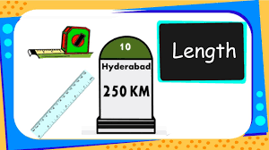
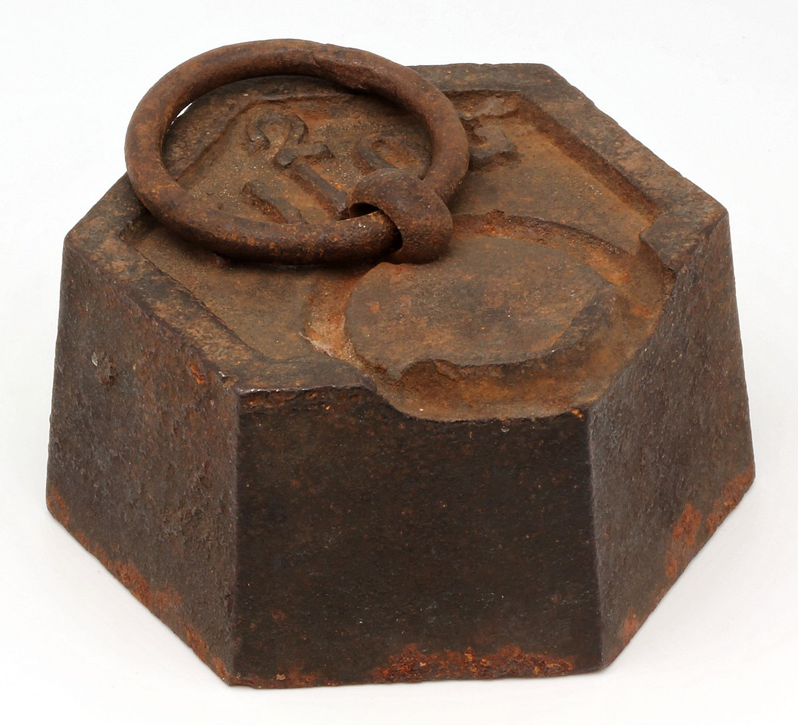
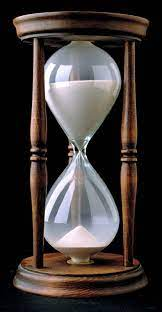

The French are widely credited with originating the metric system of measurement. The French government officially adopted the system in 1795, but only after more than a century of sometimes contentious bickering over its value and suspicion surrounding the intent of metric proponents.
John Wilkins, an English clergyman, and brother-in-law to Oliver Cromwell, first wrote about it two years before Gabriel Mouton, who is considered by many to be the founding father of the metric system. In 1670, Mouton proposed a decimal system of measurement that French scientists would spend years further refining. In 1790, the national assembly of France called for an invariable standard of weights and measurements having as its basis a unit of length based on the Earth’s circumference. As a convenience, the system would be decimal-based, with larger and smaller multiples of each unit arrived at by dividing and multiplying by 10 and its powers.
Borrowing from the Greek word “metron,” or “a measure,” a commission assigned by the academy gave the name “meter” to the unit of length. The standard it represented was to be constructed so as to equal a fraction of the distance from the North Pole to the equator. Indicative of the difficulties surrounding the adoption of the new system, a survey team charged with measuring the arc of the earth aroused such suspicion that they were harassed and even jailed by local officials as they went about their work. Napoleon himself would even ban the system before it was officially adopted by the French government.
Because of the metric system’s adaptability to scientific and engineering work, the adoption of the system flourished with the rapid expansion of the industrialized world. The U.S. Congress declared the system lawful in commerce throughout the nation in 1866. Twenty years earlier, the French made use of the system compulsory.
Timeline of Important Dates In The History Of The Metric System
->1668: John Wilkins proposed an integrated system of measurement, similar to the metric system.->1670: Gabriel Mouton proposed his decimal system of measurement based on a fraction of the Earth’s circumference.
->1671: Jean Picard proposed the swinging pendulum as a measure of length.1790: The National Assembly of France asked the French Academy of Sciences to create a standard system of weights and measures.
->1795: France adopted the metric system.
->1840: French government required all Frenchmen to convert to the metric system.
->1866: Congress legalized the use of the metric system in the United States. However, its use was not required.
->1875: The Treaty of the Meter was signed at the close of the International Bureau of Weights and Measures conference.
->1957: The U.S. Army and Marine Corps adopted the metric system. Used as the basis for their weapons and equipment.
->1965: Great Britain began adopting the metric system.
->1988: Congress passed the Omnibus Trade and Competitiveness Act. This act called for all federal government agencies to use the metric system for business by the end of 1992. ”

Babylonian and Egyptions
Early Babylonian and Egyptian records and the Hebrew Bible indicate that length was first measured with the forearm, hand, or finger and that time was measured by the periods of the sun, moon, and other heavenly bodies. For example, the cubit was a unit that indicated the length from the elbow to the fingertips. This unit was used in ancient cultures in Mesopotamia, Egypt, and Rome.
LENGTH
In the physical sciences and engineering, when one speaks of units of length, the word length is synonymous with distance. There are several units that are used to measure length. Historically, units of length may have been derived from the lengths of human body parts, the distance traveled in a number of paces, the distance between landmarks or places on the Earth, or arbitrarily on the length of some common object. In the International System of Units (SI), the base unit of length is the metre (symbol, m) and is now defined in terms of the speed of light (about 300 million metres per second). The millimetre (mm), centimetre (cm) and the kilometre (km), derived from the metre, are also commonly used units. In U.S. customary units, English or Imperial system of units, commonly used units of length are the inch (in), the foot (ft), the yard (yd), and the mile (mi). A unit of length used in navigation is the nautical mile (nmi).[7] Units used to denote distances in the vastness of space, as in astronomy, are much longer than those typically used on Earth (metre or centimetre) and include the astronomical unit (au), the light-year, and the parsec (pc). Units used to denote sub-atomic distances, as in nuclear physics, are much smaller than the centimetre. Examples include the fermi.

Galileo Galilei
Galileo Galilei was the first person to formulate coherent thoughts on inertial and gravitational mass and their equivalence. His insights were based on experiments with rolling balls on inclined planes. This all happened early 17th century.
MASS
Mass is an intrinsic property of a body. It was traditionally believed to be related to the quantity of matter in a physical body, until the discovery of the atom and particle physics. It was found that different atoms and different elementary particles, theoretically with the same amount of matter, have nonetheless different masses. Mass in modern physics has multiple definitions which are conceptually distinct, but physically equivalent. Mass can be experimentally defined as a measure of the body's inertia, meaning the resistance to acceleration (change of velocity) when a net force is applied. The object's mass also determines the strength of its gravitational attraction to other bodies. The SI base unit of mass is the kilogram (kg). In physics, mass is not the same as weight, even though mass is often determined by measuring the object's weight using a spring scale, rather than balance scale comparing it directly with known masses. An object on the Moon would weigh less than it does on Earth because of the lower gravity, but it would still have the same mass. This is because weight is a force, while mass is the property that (along with gravity) determines the strength of this force.

Ancient Egyptians
The 24 hour scale was adopted from the Egyptians and the 60 minutes and 60 seconds scale was adopted from the babylonians. If we get into the details, in ancient world, there were many kinds of time scales formulated by many countries. However, these were the common adaptations made in the modern world.
TIME
The measurement of time began with the invention of sundials in ancient Egypt some time prior to 1500 B.C. However, the time the Egyptians measured was not the same as the time today's clocks measure. For the Egyptians, and indeed for a further three millennia, the basic unit of time was the period of daylight. The Egyptians broke the period from sunrise to sunset into twelve equal parts, giving us the forerunner of today's hours. As a result, the Egyptian hour was not a constant length of time, as is the case today; rather, as one-twelfth of the daylight period, it varied with length of the day, and hence with the seasons. It also varied from place to place on the surface of the Earth. And of course, time as a measurable concept effectively ceased during the hours of darkness. The need for a way to measure time independently of the sun eventually gave rise to various devices, most notably sandglasses, waterclocks, and candles. The first two of these utilized the flow of some substance to measure time, the latter the steady fall in the height of the candle. All three provided a metaphor for time as something that flows continuously, and thus began to shape the way we think of time. Though their accuracy was never great, these devices not only provided a way to measure time without the need for the sun to be visible in the sky, they also provided the basis for a concept of time that did not depend upon the length of the day. But it was to be many centuries before advantage was taken of that possibility. Instead, each of these time-measuring devices carried elaborate systems of markings designed to give the time based on the sundial. Fragments of one thirteenth century waterclock found in France gave instructions on how to set the clock for every single day of the year! Because the hours of darkness are the antithesis of the daylight hours, the scale for the nighttime hours was simply the daytime scale for the day exactly half a year earlier. For example, the scale for the nighttime on July 1 was the daytime scale for January 1. In addition to their lack of accuracy, sandglasses, waterclocks and candles were also limited in the total length of time they could measure before having to be reset. As a result, they were largely used for measuring the duration of some activity, such as a speech made by an orator, cooking time, or the length of a legal consultation.

Michael Faraday
An English scientist, Michael Faraday, was the first one to realize that an electric current could be produced by passing a magnet through a copper wire.Almost all the electricity we use today is made with magnets and coils of copper wire in giant power plants. Both the electric generator and electric motor are based on this principle. A generator converts motion energy into electricity. A motor converts electrical energy into motion energy.
ELECTRIC CURRENT
Electricity is the set of physical phenomena associated with the presence and motion of matter that has a property of electric charge. Electricity is related to magnetism, both being part of the phenomenon of electromagnetism, as described by Maxwell's equations. Various common phenomena are related to electricity, including lightning, static electricity, electric heating, electric discharges and many others.
The presence of either a positive or negative electric charge produces an electric field. The movement of electric charges is an electric current and produces a magnetic field. In most applications, a force acts on a charge with a magnitude given by Coulomb's law. Electric potential is typically measured in volts.
Electricity is at the heart of many modern technologies, being used for:
->Electric power where electric current is used to energise equipment;
-> Electronics which deals with electrical circuits that involve active electrical components such as vacuum tubes, transistors, diodes and integrated circuits, and associated passive interconnection technologies.
Electrical phenomena have been studied since antiquity, though progress in theoretical understanding remained slow until the 17th and 18th centuries. The theory of electromagnetism was developed in the 19th century, and by the end of that century electricity was being put to industrial and residential use by electrical engineers. The rapid expansion in electrical technology at this time transformed industry and society, becoming a driving force for the Second Industrial Revolution. Electricity's extraordinary versatility means it can be put to an almost limitless set of applications which include transport, heating, lighting, communications, and computation. Electrical power is now the backbone of modern industrial society.


Daniel Gabriel Fahrenheit
The first temperature scale that found widespread application was introduced in 1724 by the German physicist Daniel Gabriel Fahrenheit (1686-1736). After visiting Ole Rømer in Copenhagen, he wanted to refine the idea of using freezing brine as calibration point.
TEMPERATURE
Attempts at standardized temperature measurement prior to the 17th century were crude at best. For instance in 170 AD, physician Claudius Galenus mixed equal portions of ice and boiling water to create a "neutral" temperature standard. The modern scientific field has its origins in the works by Florentine scientists in the 1600s including Galileo constructing devices able to measure relative change in temperature, but subject also to confounding with atmospheric pressure changes. These early devices were called thermoscopes. The first sealed thermometer was constructed in 1654 by the Grand Duke of Tuscany, Ferdinand II.The development of today's thermometers and temperature scales began in the early 18th century, when Gabriel Fahrenheit produced a mercury thermometer and scale, both developed by Ole Christensen Rømer. Fahrenheit's scale is still in use, alongside the Celsius and Kelvin scales.